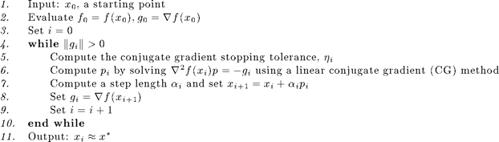
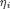
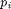
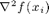
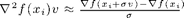
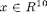
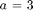

Truncated Newton Optimization
Truncated Newton (TN) methods for minimization are Newton methods in which the Newton direction is only approximated at each iteration (thus reducing computation). Furthermore, the Poblano implementation of the truncated Newton method does not require an explicit Hessian matrix in the computation of the approximate Newton direction (thus reducing storage requirements).
The Poblano function for the truncated Newton method is called tn.
Contents
Introduction
The general steps of the TN method in Poblano is given below in high-level pseudo-code [1]:

Notes
In Step 5, the linear conjugate gradient (CG) method stopping tolerance is allowed to change at each iteration. The input parameter CGTolType determines how  is computed.
In Step 6,
- One of Matlab's CG methods is used to solve for  : symmlq (designed for symmetric indefinite systems) or pcg (the classical CG method for symmetric positive definite systems). The input parameter CGSolver controls the choice of CG method to use.
- The maximum number of CG iterations is specified using the input parameter CGIters.
- The CG method stops when .
- In the CG method, matrix-vector products involving  times a vector are approximated using the following finite difference approximation [1]: 
- The difference step, , is specified using the input parameter HessVecFDStep. The computation of the finite difference approximation is performed using the hessvec_fd provided with Poblano.
Method Specific Input Parameters
The input parameters specific to the tn method are presented below. See the Optimization Input Parameters documentation for more details on the Poblano parameters shared across all methods.
CGSolver Matlab CG method to use {'symmlq'}
'symmlq' symmlq (designed for symmetric indefinite systems)
'pcg' pcg (designed for symmetric positive definite systems)CGIters Maximum number of conjugate gradient iterations allowed {5}CGTolType CG stopping tolerance type used {'quadratic'}
'quadratic' ||R|| / ||G|| < min(0.5,||G||)
'superlinear' ||R|| / ||G|| < min(0.5,sqrt(||G||))
'fixed' ||R|| < CGTol
where R is the residual and G is the gradient of FUN at XCGTol CG stopping tolerance when CGTolType is 'fixed' {1e-6}HessVecFDStep Hessian vector product finite difference step {1e-10}
0 Use iterate-based step: 1e-8*(1+||X||)
>0 Fixed value to use at the difference stepDefault Input Parameters
The default input parameters are returned with the following call to tn:
params = tn('defaults')
params =
CGIters: 5
CGSolver: 'symmlq'
CGTol: 1e-06
CGTolType: 'quadratic'
Display: 'iter'
HessVecFDStep: 1e-10
LineSearch_ftol: 0.0001
LineSearch_gtol: 0.01
LineSearch_initialstep: 1
LineSearch_maxfev: 20
LineSearch_method: 'more-thuente'
LineSearch_stpmax: 1e+15
LineSearch_stpmin: 1e-15
LineSearch_xtol: 1e-15
MaxFuncEvals: 100
MaxIters: 100
RelFuncTol: 1e-06
StopTol: 1e-05
TraceFunc: 0
TraceFuncEvals: 0
TraceGrad: 0
TraceGradNorm: 0
TraceRelFunc: 0
TraceX: 0
See the Optimization Input Parameters documentation for more details on the Poblano parameters shared across all methods.
Examples
Below are the results of using the tn method in Poblano to solve example problems solved using the ncg method in the Nonlinear Conjugate Gradient Optimization and lbfgs method in the Limited-Memory BFGS Optimization documentation.
Example 1 (from Poblano Examples)
In this example, we have  and  , and use a random starting point.
randn('state',0);
x0 = randn(10,1)
out = tn(@(x) example1(x,3), x0)
x0 =
-0.43256
-1.6656
0.12533
0.28768
-1.1465
1.1909
1.1892
-0.037633
0.32729
0.17464
Iter FuncEvals F(X) ||G(X)||/N
------ --------- ---------------- ----------------
0 1 1.80545257 0.73811114
tn: line search warning = 0
1 10 -4.10636797 0.54564169
2 18 -4.21263331 0.41893997
tn: line search warning = 0
3 28 -7.18352472 0.36547546
4 34 -8.07095085 0.11618518
tn: line search warning = 0
5 41 -9.87251163 0.15057476
6 46 -9.99999862 0.00049753
7 50 -10.00000000 0.00000000
out =
Params: [1x1 inputParser]
ExitFlag: 0
X: [10x1 double]
F: -10
G: [10x1 double]
FuncEvals: 50
Iters: 7
Note that in this example the line search in tn method displays a warning during iterations 1, 3 and 5, indicating that the norm of the search direction is nearly 0. In those cases, the steepest descent direction is used for the search direction during those iterations.
Example 2
In this example, we compute a rank 2 approximation to a Pascal matrix (generated using the Matlab function pascal(4)). The starting point is a random vector. Note that in the interest of space, Poblano is set to display only the final iteration is this example.
m = 4; n = 4; k = 4; Data.rank = k; Data.A = pascal(m); randn('state',0); x0 = randn((m+n)*k,1); out = tn(@(x) example2(x,Data), x0, 'Display', 'final')
Iter FuncEvals F(X) ||G(X)||/N
------ --------- ---------------- ----------------
16 105 0.00013951 0.00060739
out =
Params: [1x1 inputParser]
ExitFlag: 2
X: [32x1 double]
F: 0.00013951
G: [32x1 double]
FuncEvals: 105
Iters: 16
As for the ncg and lbfgs methods, the fact that out.ExitFlag > 0 indicates that the method did not converge to the specified tolerance (i.e., the default StopTol input parameter value of 1e-5). Since the maximum number of function evaluations was exceeded, we can increasing the number of maximum numbers of function evaluations and iterations allowed, and the optimizer converges to a solution within the specified tolerance.
out = tn(@(x) example2(x,Data), x0, 'MaxIters',1000, ... 'MaxFuncEvals',10000,'Display','final')
Iter FuncEvals F(X) ||G(X)||/N
------ --------- ---------------- ----------------
21 155 0.00000001 0.00000606
out =
Params: [1x1 inputParser]
ExitFlag: 0
X: [32x1 double]
F: 9.4184e-09
G: [32x1 double]
FuncEvals: 155
Iters: 21
Verifying the solution, we see that we find a matrix decomposition which fits the matrix with very small relative error (given the stopping tolerance of 1e-5 used by the optimizer).
[U,V] = example2_extract(m,n,k,out.X); norm(Data.A-U*V')/norm(Data.A)
ans = 4.4426e-06
Again, in Example 2, we see that tn exhibits different behavior from that of the ncg and lbfgs methods. Thus, it is recommended that several test runs on smaller problems are performed initially using the different methods to help decide which method and set of parameters works best for a particular class of problems.
References
[1] Dembo, R.S. and and Steihaug, T. (1983). Truncated-Newton Algorithms for Large-Scale Unconstrained Minimization., Mathematical Programming, 26, 190-212.
| Poblano Toolbox |